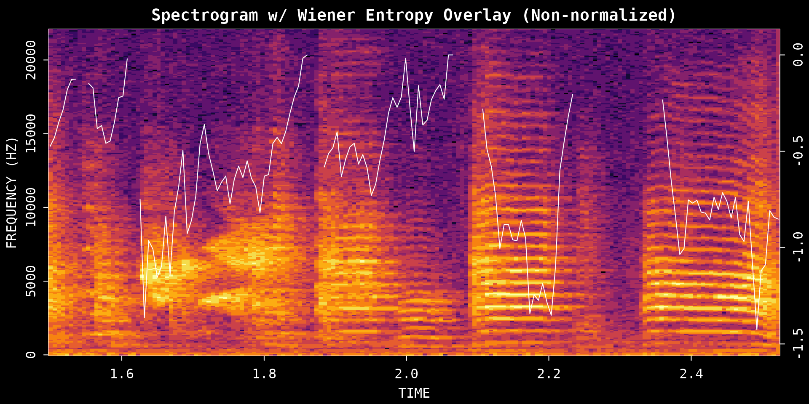
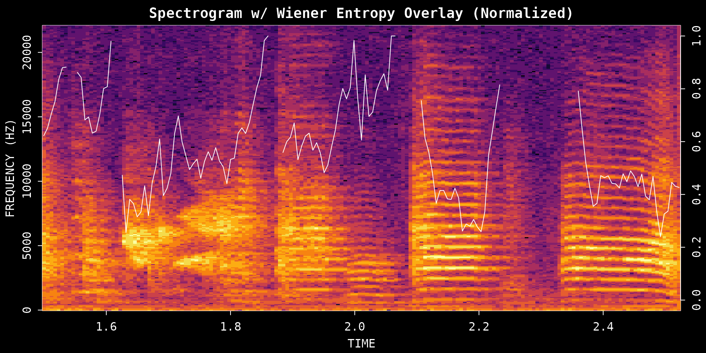
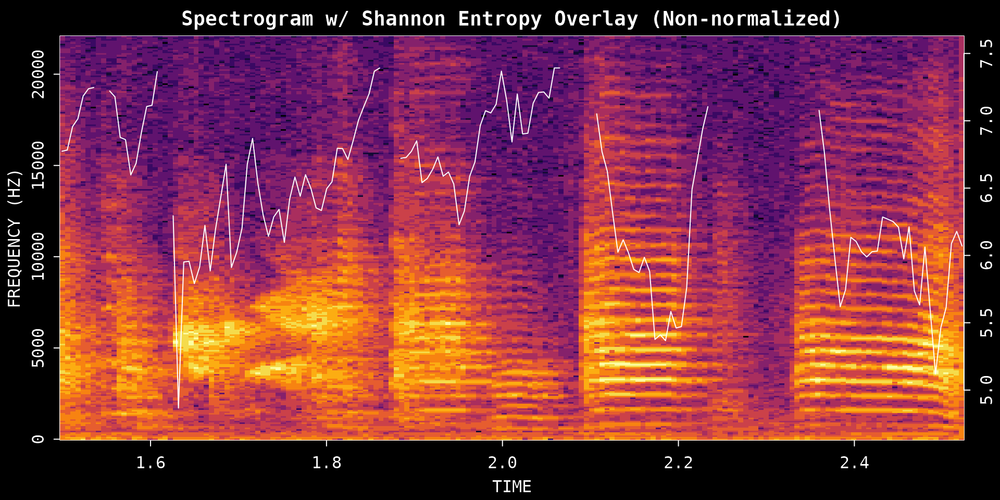
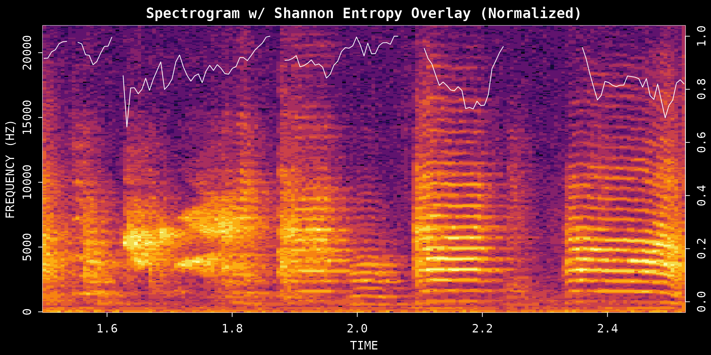
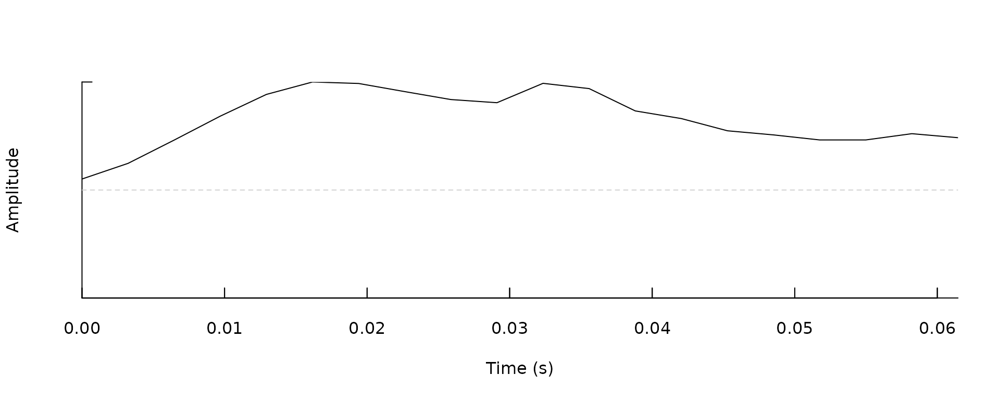
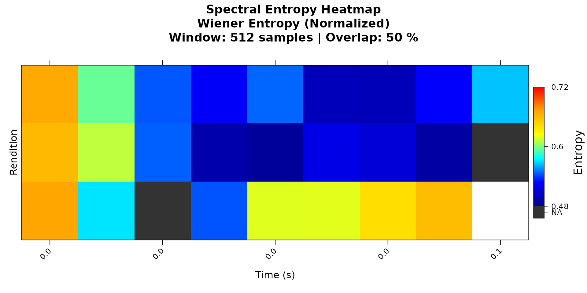
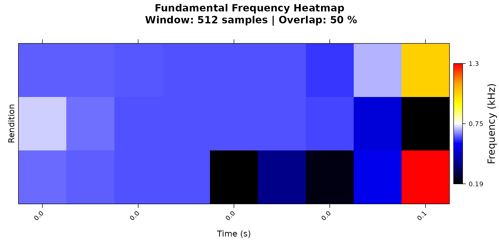

Acoustic Feature Analysis
Source:vignettes/acoustic_feature_analysis.Rmd
acoustic_feature_analysis.RmdIntroduction
This vignette covers three ASAP functions for examining acoustic
structure within a single recording: spectral_entropy(),
FF(), and amp_env().
-
spectral_entropy()measures how tonal or noisy a sound is at each point in time by quantifying how evenly power is spread across frequencies. Zebra finch syllables are often highly structured and may show low entropy, especially for harmonic stack syllables or certain calls; in contrast, noisier syllables, broadband calls, or background noise tend to produce higher-entropy traces. -
FF()tracks fundamental frequency (perceived pitch) over time. It is the go-to tool for looking at pitch contours within a single syllable or comparing pitch trajectories across many renditions. -
amp_env()extracts the amplitude envelope, summarizing how the overall intensity of sound rises and falls across the duration of a segment.
The vignette walks through how to call each function on a simple time
window (provide a file path and start/end times), and then shows how the
same functions accept a segment data frame produced by
segment() — a natural bridge toward population-level
analysis with SAP objects.
Prerequisites: Before reading this vignette, we recommend completing:
- Overview: ASAP 101 - Basic ASAP functions
What you will learn:
- What kinds of data each function accepts
- How to measure spectral structure with entropy (Wiener and Shannon)
- How to extract pitch contours with the cepstrum method
- How to measure amplitude envelopes and reuse segment data frames for feature analysis
Overview: What Data Do These Functions Accept?
All three functions share a common design: they dispatch on the class of their first argument, so you can pass different kinds of input without changing the function name.
spectral_entropy() and FF()
| Input type | What to pass | Key extra argument |
|---|---|---|
| Single WAV file | Character path to .wav file |
start_time, end_time (seconds) |
| Segment data frame | Data frame with filename, start_time,
end_time columns |
wav_dir (directory containing the WAV files) |
| SAP object | A Sap object |
segment_type, sampling/filtering options |
| Pre-computed matrix | An entropy or F0 matrix returned by a previous call | — (re-plots the stored matrix) |
When x is a character path,
start_time and end_time default to the full
file duration if omitted.
When x is a data frame, it must contain
at least filename, start_time, and
end_time columns. A single-row data frame behaves
identically to the WAV file method. A multi-row data frame triggers
parallel processing and returns an aligned matrix.
amp_env()
amp_env() always takes a single-row data
frame (segment_row) — the row must contain at
least start_time and end_time. Provide
wav_dir when the WAV file directory is not embedded in the
data frame as an attribute.
amp_env(segment_row, wav_dir = NULL, msmooth = NULL,
amp_normalize = c("none", "peak", "rms"), plot = FALSE)Setup
library(ASAP)
#> ASAP v0.3.5.9000 loaded.
wav_file <- system.file("extdata", "zf_example.wav", package = "ASAP")
analysis_start <- 1.5
analysis_end <- 2.51. Spectral Entropy Analysis
Spectral entropy measures how structured or noisy the frequency distribution is within a sound segment. Harmonic syllables tend to have lower entropy, while broader-band noisy sounds tend to have higher entropy.
Choosing method and normalize
Two arguments control what the trace looks like:
-
method:"wiener"(default) quantifies spectral flatness — more negative values mean more structured sound, 0 means noise-like."shannon"quantifies information content — higher values reflect more uniform spectral energy. -
normalize:FALSEreturns the native scale;TRUErescales the output to 0–1, making it easier to compare plots across different recordings or methods.
These arguments are independent — you can use either method with or without normalization:
# Wiener entropy, native scale
wiener_raw <- spectral_entropy(
wav_file,
start_time = analysis_start,
end_time = analysis_end,
method = "wiener",
normalize = FALSE,
plot = TRUE
)
# Wiener entropy, normalized to 0–1
wiener_norm <- spectral_entropy(
wav_file,
start_time = analysis_start,
end_time = analysis_end,
method = "wiener",
normalize = TRUE,
plot = TRUE
)
# Shannon entropy, native scale
shannon_raw <- spectral_entropy(
wav_file,
start_time = analysis_start,
end_time = analysis_end,
method = "shannon",
normalize = FALSE,
plot = TRUE
)
# Shannon entropy, normalized to 0–1
shannon_norm <- spectral_entropy(
wav_file,
start_time = analysis_start,
end_time = analysis_end,
method = "shannon",
normalize = TRUE,
plot = TRUE
)
Argument guide
| Argument | Options | How to think about it |
|---|---|---|
method |
"wiener" or "shannon"
|
Use Wiener for spectral flatness (classic bioacoustics metric); use Shannon for information-content style entropy |
normalize |
FALSE or TRUE
|
Use FALSE to keep the native scale; use
TRUE for a 0–1 scale that is easier to compare across
plots |
All four combinations of method × normalize
are valid; pick whichever suits your analysis question.
2. Fundamental Frequency (Pitch) Analysis
The FF() function extracts the fundamental frequency
contour, showing how perceived pitch changes over time.
The two most important arguments for a single recording are:
-
method:"cepstrum"or"yin" -
fmax: the upper pitch limit to search (Hz)
Cepstrum method
"cepstrum" is the default and the easiest place to
start. It is fast and works well for quick inspection of tonal
syllables.
pitch_cepstrum <- FF(
wav_file,
start_time = analysis_start,
end_time = analysis_end,
method = "cepstrum",
fmax = 1400,
threshold = 10,
plot = TRUE
)
YIN method
"yin" can be more robust for some signals, but it
requires Python dependencies through reticulate, including
librosa and numpy.
# ASAP attempts to auto-install librosa/numpy via reticulate when needed.
# This chunk runs only when Python and its dependencies are available;
# it skips gracefully otherwise (e.g. on CRAN or CI build servers).
has_yin <- tryCatch({
requireNamespace("reticulate", quietly = TRUE) &&
reticulate::py_module_available("librosa") &&
reticulate::py_module_available("numpy")
}, error = function(e) FALSE)
#> Downloading uv...Done!
if (has_yin) {
pitch_yin <- FF(
wav_file,
start_time = analysis_start,
end_time = analysis_end,
method = "yin",
fmax = 1400,
threshold = 10,
plot = TRUE
)
} else {
message("YIN method requires Python with librosa and numpy. Skipping.")
}
#> YIN method requires Python with librosa and numpy. Skipping.Argument guide
| Argument | Options | How to think about it |
|---|---|---|
method |
"cepstrum" or "yin"
|
Start with cepstrum; try yin if you want
an alternative pitch tracker and have Python dependencies installed |
fmax |
Numeric upper limit in Hz | Raise it if the contour clips too low; lower it to reduce implausibly high estimates |
threshold |
Confidence filter (%) | Higher values remove uncertain estimates but may introduce gaps |
3. Amplitude Envelope from a Syllable Data Frame
The amplitude envelope summarizes how sound intensity changes over
time. amp_env() takes a single-row segment data frame with
filename, start_time, and
end_time columns. A syllable data frame from
segment() is a simple way to create that input.
Step 1: Segment a small time window into syllables
syllables <- segment(
wav_file,
start_time = 1,
end_time = 5,
flim = c(1, 8),
silence_threshold = 0.01,
min_syllable_ms = 20,
max_syllable_ms = 240,
min_level_db = 10,
verbose = FALSE,
plot = FALSE
)
knitr::kable(head(syllables), digits = 3)| filename | selec | threshold | .start | .end | start_time | end_time | duration | silence_gap |
|---|---|---|---|---|---|---|---|---|
| zf_example.wav | 1 | 10 | 0.061 | 0.123 | 1.061 | 1.123 | 0.061 | NA |
| zf_example.wav | 2 | 10 | 0.151 | 0.199 | 1.151 | 1.199 | 0.047 | 0.028 |
| zf_example.wav | 3 | 10 | 0.260 | 0.312 | 1.260 | 1.312 | 0.052 | 0.061 |
| zf_example.wav | 4 | 10 | 0.359 | 0.411 | 1.359 | 1.411 | 0.052 | 0.047 |
| zf_example.wav | 5 | 10 | 0.444 | 0.520 | 1.444 | 1.520 | 0.076 | 0.033 |
| zf_example.wav | 6 | 10 | 0.548 | 0.610 | 1.548 | 1.610 | 0.061 | 0.028 |
Step 2: Choose one syllable row
example_syllable <- NULL
if (!is.null(syllables) && nrow(syllables) >= 1) {
example_syllable <- syllables[1, , drop = FALSE]
knitr::kable(example_syllable, digits = 3)
}| filename | selec | threshold | .start | .end | start_time | end_time | duration | silence_gap |
|---|---|---|---|---|---|---|---|---|
| zf_example.wav | 1 | 10 | 0.061 | 0.123 | 1.061 | 1.123 | 0.061 | NA |
Step 3: Extract the envelope
if (!is.null(example_syllable)) {
env_syl <- amp_env(
example_syllable,
wav_dir = dirname(wav_file),
msmooth = c(256, 50),
amp_normalize = "peak",
plot = TRUE
)
}
Smoothing and normalization
-
msmooth: a length-2 vectorc(window_samples, overlap_percent). Larger windows smooth out fine-grained amplitude fluctuations; smaller windows preserve rapid transients. -
amp_normalize:"none"keeps the raw scale;"peak"scales to the maximum amplitude (good for comparing envelope shapes);"rms"scales by RMS energy (good for comparing absolute loudness).
Argument guide
| Argument | Options | How to think about it |
|---|---|---|
segment_row |
Single-row data frame | Must contain filename, start_time,
end_time
|
wav_dir |
Path string | Directory containing the WAV files |
msmooth |
Numeric vector c(window, overlap) | Larger window = smoother envelope; smaller = more temporal detail |
amp_normalize |
"none", "peak", "rms"
|
Use "peak" when comparing envelope shapes across
segments |
4. Add-on: Entropy and Pitch from a Segment Data Frame
The same syllable table can also be passed directly to
spectral_entropy() and FF(). This is useful
when you want to analyze a set of detected segments instead of manually
specifying start_time and end_time for each
one.
Step 1: Select a few syllable rows
example_syllables <- NULL
if (!is.null(syllables) && nrow(syllables) >= 3) {
example_syllables <- syllables[1:3, ]
knitr::kable(example_syllables, digits = 3)
}| filename | selec | threshold | .start | .end | start_time | end_time | duration | silence_gap |
|---|---|---|---|---|---|---|---|---|
| zf_example.wav | 1 | 10 | 0.061 | 0.123 | 1.061 | 1.123 | 0.061 | NA |
| zf_example.wav | 2 | 10 | 0.151 | 0.199 | 1.151 | 1.199 | 0.047 | 0.028 |
| zf_example.wav | 3 | 10 | 0.260 | 0.312 | 1.260 | 1.312 | 0.052 | 0.061 |
Step 2: Run spectral entropy on the data frame
The same method and normalize arguments
from the single-file examples apply here. Mix and match freely — for
example, try method = "shannon" with
normalize = FALSE if you prefer the information-content
scale.
if (!is.null(example_syllables)) {
entropy_df <- spectral_entropy(
example_syllables,
wav_dir = dirname(wav_file),
method = "wiener",
normalize = TRUE,
plot = TRUE
)
}
Step 3: Run pitch analysis on the data frame
For data-frame input, FF() aligns the selected segments
onto a common time axis and returns a multi-segment result. The
method, fmax, and threshold
arguments work the same way as for a single WAV file.
if (!is.null(example_syllables)) {
pitch_df <- FF(
example_syllables,
wav_dir = dirname(wav_file),
method = "cepstrum",
fmax = 1400,
threshold = 10,
plot = TRUE
)
}
Summary
These three functions provide a compact toolkit for exploring acoustic variation in a single recording:
| Function | What it captures | Primary input types |
|---|---|---|
spectral_entropy() |
Spectral structure or noisiness | WAV path, data frame, SAP object, pre-computed matrix |
FF() |
Pitch contour over time | WAV path, data frame, SAP object, pre-computed matrix |
amp_env() |
Amplitude dynamics within a segment | Single-row data frame |
For motif-scale acoustic analysis across many recordings, continue to the SAP object workflow starting with Constructing SAP Object.
Session Info
sessionInfo()
#> R version 4.5.3 (2026-03-11)
#> Platform: x86_64-pc-linux-gnu
#> Running under: Ubuntu 24.04.4 LTS
#>
#> Matrix products: default
#> BLAS: /usr/lib/x86_64-linux-gnu/openblas-pthread/libblas.so.3
#> LAPACK: /usr/lib/x86_64-linux-gnu/openblas-pthread/libopenblasp-r0.3.26.so; LAPACK version 3.12.0
#>
#> locale:
#> [1] LC_CTYPE=C.UTF-8 LC_NUMERIC=C LC_TIME=C.UTF-8
#> [4] LC_COLLATE=C.UTF-8 LC_MONETARY=C.UTF-8 LC_MESSAGES=C.UTF-8
#> [7] LC_PAPER=C.UTF-8 LC_NAME=C LC_ADDRESS=C
#> [10] LC_TELEPHONE=C LC_MEASUREMENT=C.UTF-8 LC_IDENTIFICATION=C
#>
#> time zone: UTC
#> tzcode source: system (glibc)
#>
#> attached base packages:
#> [1] stats graphics grDevices utils datasets methods base
#>
#> other attached packages:
#> [1] ASAP_0.3.5.9000
#>
#> loaded via a namespace (and not attached):
#> [1] rappdirs_0.3.4 sass_0.4.10 generics_0.1.4 tidyr_1.3.2
#> [5] lattice_0.22-9 digest_0.6.39 magrittr_2.0.5 evaluate_1.0.5
#> [9] grid_4.5.3 RColorBrewer_1.1-3 fastmap_1.2.0 rprojroot_2.1.1
#> [13] jsonlite_2.0.0 Matrix_1.7-4 tuneR_1.4.7 purrr_1.2.1
#> [17] scales_1.4.0 pbapply_1.7-4 textshaping_1.0.5 jquerylib_0.1.4
#> [21] cli_3.6.5 rlang_1.2.0 pbmcapply_1.5.1 fftw_1.0-9
#> [25] withr_3.0.2 seewave_2.2.4 cachem_1.1.0 yaml_2.3.12
#> [29] av_0.9.6 tools_4.5.3 parallel_4.5.3 dplyr_1.2.1
#> [33] ggplot2_4.0.2 here_1.0.2 reticulate_1.45.0 vctrs_0.7.2
#> [37] R6_2.6.1 png_0.1-9 lifecycle_1.0.5 fs_2.0.1
#> [41] MASS_7.3-65 ragg_1.5.2 pkgconfig_2.0.3 desc_1.4.3
#> [45] pkgdown_2.2.0 pillar_1.11.1 bslib_0.10.0 gtable_0.3.6
#> [49] glue_1.8.0 Rcpp_1.1.1 systemfonts_1.3.2 xfun_0.57
#> [53] tibble_3.3.1 tidyselect_1.2.1 knitr_1.51 farver_2.1.2
#> [57] htmltools_0.5.9 patchwork_1.3.2 rmarkdown_2.31 signal_1.8-1
#> [61] compiler_4.5.3 S7_0.2.1